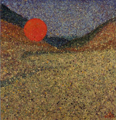

NOT EVERYBODY knows how I killed old Phillip Mathers, smashing his jaw in with my spade; but first it is better to speak of my friendship with John Divney because it was he who first knocked old Mathers down by giving him a great blow in the neck with a special bicycle pump which he manufactured himself out of a hollow iron bar. Divney was a strong civil man but he was lazy and idle minded. He was personally responsible for the whole idea in the first place. It was he who told me to bring my spade. He was the one who gave the orders on the occasion and also the expla-nations when they were called for.
I was born a long time ago. My father was a strong farmer and my mother owned a public house. We all lived in the public house but it was not a strong house at all and was closed most of the day because my father was out at work on the farm and my mother was always in the kitchen and for some reason the customers never came until it was nearly bedtime; and well after it at Christmas time and on other unusual days like that. I never saw my mother outside the kitchen in my life and never saw a customer during the day and even at night I never saw more than two or three together. But then I was in bed part of the time and it is possible that things happened differently with my mother and with the customers late at night. My father I do not remember well but he was a strong man and did not talk much except on Saturdays when he would mention Parnell with the customers and say that Ireland was a queer country. My mother I can recall perfectly. Her face was always red and sore looking from bending at the fire; she spent her life making tea to pass the time and singing snatches of old songs to pass the meantime. I knew her well but my father and I were strangers and did not converse much; often indeed When I would be studying in the kitchen at night I could hear him through the thin door to the shop talking there from his seat under the oil lamp for hours on end to Mick the sheepdog. Always it was only the drone of his voice I heard, never the separate bits of words. He was a man who understood all dogs thoroughly and treated them like human beings. My mother owned a cat but it was a foreign outdoor animal and was rarely seen and my mother never took any notice of it. We were all happy enough in a queer separate way.
Then a certain year came about the Christmas time and when the year was gone my father and mother were gone also. Mick the sheepdog was very tired and sad after my father went and would not do his work with the sheep at all; he too went the next year. I was young and foolish at the time and did not know properly why these people had all left me, where they had gone and why they did not give explanations beforehand. My mother was the first to go and I can remember a fat man with a red face and a black suit telling my father that there was no doubt where she was, that he could be as sure of that as he could of anything else in this vale of tears. But he did not mention where and as I thought the whole thing was very private and that she might be back on Wednesday, I did not ask him where. Later, when my father went, I thought he had gone to fetch her with an outside car but when neither of them came back on the next Wednesday, I felt sorry and disappointed. The man in the black suit was back again. He stayed in the house for two nights and was continually washing his hands in the bedroom and reading books. There were two other men, one a small pale man and one a tall black man in leggings. They had pockets full of pennies and they gave me one every time I asked them questions. I can remember the tall man in the leggings saying to the other man:
' The poor misfortunate little bastard.'